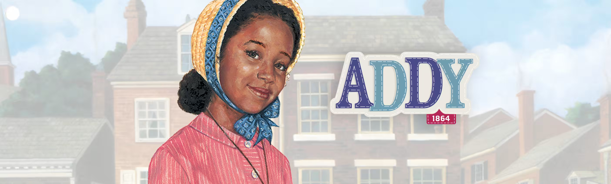

Addy dreams of a better life for her and her family. Born into slavery in North Carolina, she must find the courage to claim her freedom—even if it means risking everything and leaving some of the family she loves behind.
After a brave escape to Philadelphia, Addy’s world gets bigger and bigger. Every day is filled with new changes. What keeps Addy going is the love of her family. She does everything she can to love and support Momma. She dreams of the day she’ll be reunited with Poppa; her older brother Sam; and her younger sister, Esther. And while circumstances sometimes keep the Walkers apart, their hearts are always connected.

Addy’s courageous and loving mother. She saves Addy from being sold off the plantation by escaping with her. Momma is a talented seamstress who gets a job at a dress shop in Philadelphia.

Addy’s father, whose dream of freedom gives the family strength. He reminds Addy that there’s always freedom inside her head and her heart. He reunites with Addy and Momma in Philadelphia where he gets a job as a carpenter.

Addy’s 15-year-old brother wants to run north and fight in the war for freedom. Sam is sold at the same time as Poppa, and he eventually becomes a soldier before joining the family in Philadelphia. Sam is proud of how smart Addy is and always has a riddle for her.

Addy’s 1-year-old sister is too young to make the escape to freedom. Momma makes the heartbreaking decision to leave her on the plantation. When Auntie Lula finally brings Esther to Philadelphia, Esther does not remember her family very well.

Lula is not a biological relative, but she’s part of Addy’s family anyway. She’s enslaved on Master Stevens’s plantation and looks out for the Walkers. She takes care of Esther after Addy and Momma escape.

Solomon is married to Lula. He gives Addy and her mother advice on how to escape and directs them to Miss Caroline’s safe house. Uncle Solomon gives Addy a half dime and tells her that “freedom’s got a cost.”

Sarah is the first person Addy meets in Philadelphia, and the two become best friends. Sarah was born on a plantation in Virginia and understands how Addy feels when she first arrives in freedom. Sarah helps Addy navigate life in the city and at school.

Sarah’s mother belongs to the Freedom Society of Trinity A.M.E. Church. She and Sarah meet Addy and her mother at the pier and help them get settled in Philadelphia.

Addy’s teacher is kind and patient. She’s from North Carolina and escaped from slavery, just like Addy. Miss Dunn encourages and inspires Addy to pursue her dream of becoming a teacher.

The owner of a dress shop who gives Momma a job and lets Addy and Momma stay in a room above the shop.

An older woman who lives in the boarding house where Addy’s family moves after Poppa arrives in Philadelphia. M’Dear is blind, but she helps Addy see that there is hope despite the prejudices she encounters.